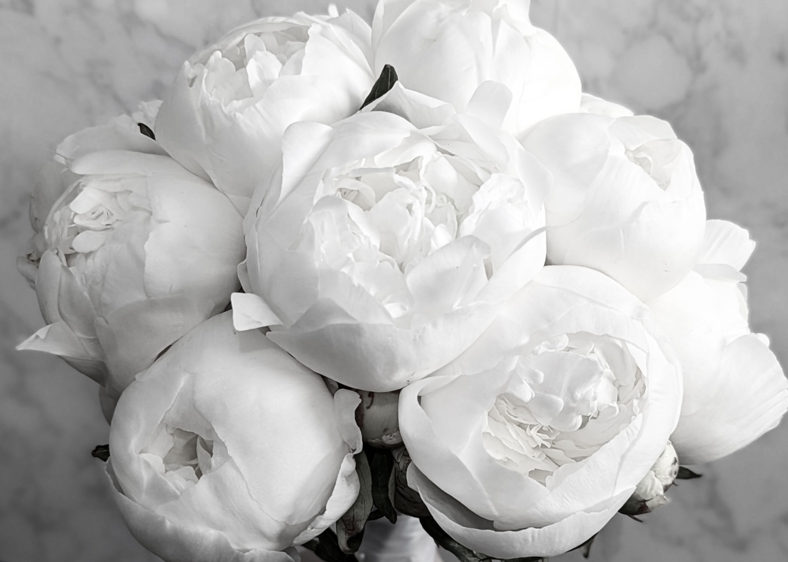
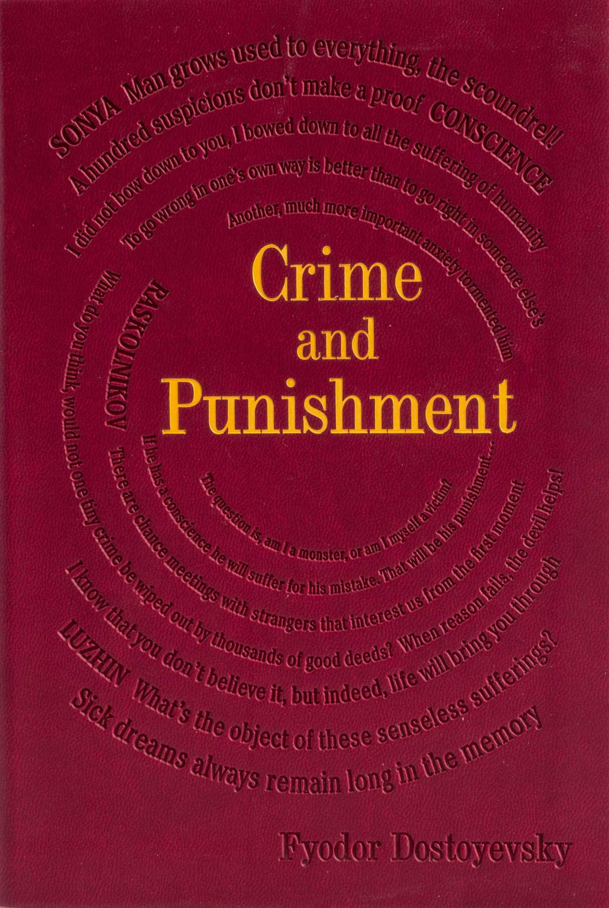
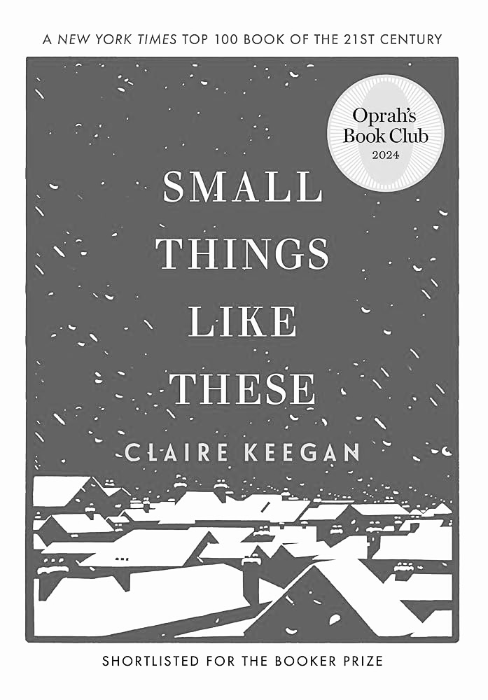
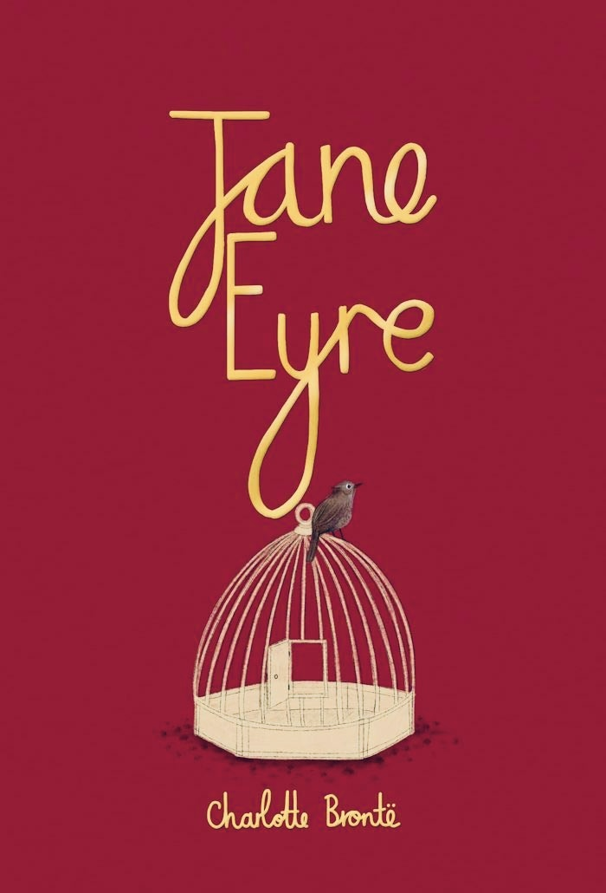
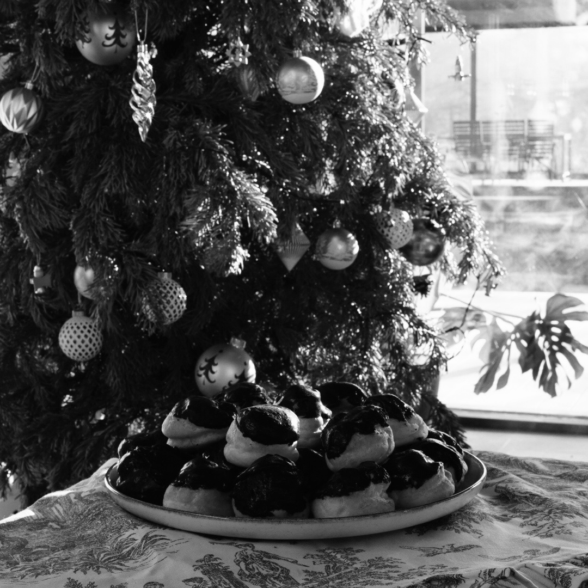

Maria Muste Ashtor
Founding a brand at the intersection of beauty and philanthropy.
"Beauty will save the world"

Favorite Books

Crime and Punishment

Small things like these

Jane Eyre
Last Baked
Profiterols

Pastry Cream
350 ml whole milk
350 ml heavy cream
100 g erythritol
1 vanilla bean
7 large egg yolks, room temperature
5 tablespoons cornstarch
85 g unsalted butter, softened
In a saucepan, heat the milk, cream, vanilla bean and seeds, erythritol, and salt until just steaming. Do not boil.
In a bowl, whisk the egg yolks with the cornstarch until smooth.
Slowly pour the hot milk mixture into the yolks, whisking constantly.
Return everything to the saucepan and cook over medium heat, whisking continuously, until thick and glossy.
Whisk in the butter until fully incorporated.
Choux Pastry
235 ml water
115 g unsalted butter
125 g all-purpose flour
4 large eggs, room temperature
Preheat oven to 200°C
In a saucepan, bring the water, butter, and salt to a full boil.
Remove from heat, add all the flour at once, and stir vigorously.
Return to medium heat and cook the dough for 1–2 minutes, stirring, until it forms a smooth ball and leaves a thin film on the pan.
Transfer to a bowl and let cool for about 5 minutes.
Add the eggs one at a time, mixing well after each, until the dough is smooth and glossy.
Pipe small mounds onto a parchment-lined tray.
Bake for 20 minutes.